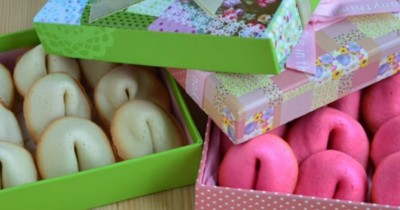

Печенье с пожеланием к Новому году

Ингредиенты
- Яичные белки – 2 шт..
- Сахар - 0.5 стак.
- Пшеничная мука - 0.5 стак.
- Подсолнечное масло 3 стол.л.
- Вода 2.5. стол.л.
- Ваниль - по вкусу
- Соль (щепотка)
Рецепт приготовления
- Как сделать печенье с пожеланиями (предсказаниями)? Подготовьте ингредиенты. Заранее включите духовку на 180 градусов.
- Для этого рецепта очень важно, чтобы в белки не попало ни капли желтка или жгутиков - пена не будет какой надо устойчивой.
- Когда появится пена - можете наращивать обороты.
- Когда пена станет крепенькой, добавьте сахар.
- Взбивайте теперь до плотных устойчивых пиков. Готово, когда вы сможете без опаски держать перевернутую миску с белками над головой.
- Просейте муку и добавьте масло.
- Хорошо перемешайте. Получается густое тесто.
- Понемногу добавьте воду до чуть жидкого теста.
- Вот такого.
- На пергаменте нарисуйте круги. Оптимальный диаметр - 7-8 см. Пергамент лучше выбирайте с силиконовым покрытием.
- В круги ровным слоем выложите тесто. На каждый круг - примерно 1 ч.л. теста.
- Переложите на противень и выпекайте в среднем 5 минут при 180 градусах. Точное время зависит от мощности вашей духовки и может варьировать от 4 до 8 минут.
- Готово, когда края чуть зарумянились.
- При помощи лопатки или вилки снимаем по одному печенью, а остальное быстро ставим в открытую горячую духовку. Работаем быстро - печенье быстро сохнет и будет ломаться, и аккуратно - оно горячее. На этом этапе нужна некоторая доля сноровки, чтобы успеть сложить заготовку в печенье, пока оно не засохло.
- На серединку печенья кладем заранее подготовленное пожелание.
- Складываем пополам.
- И перегибаем еще пополам в другом направлении, опирая печенье о край стакана.
- Готовые печенья положите остывать в маленькие чашки - так печенья не развернутся и будут одинаковыми.
- Печенья готовы. Что же там внутри?
- Для разноцветных печений добавьте в тесто красители.
- Дальше - по той же схеме. Выкладываем круги из теста. Можно использовать один пергамент несколько раз. Печем.
- Снимаем с пергамента.
- Вкладываем пожелание и сворачиваем. Даем остыть.
- И пусть там будут лучшие слова на свете!
- И пусть у вас будет все хорошо!
- Будьте счастливы!
Пусть пожелания сбудутся!
Приятного!
Вернуться к списку блюд